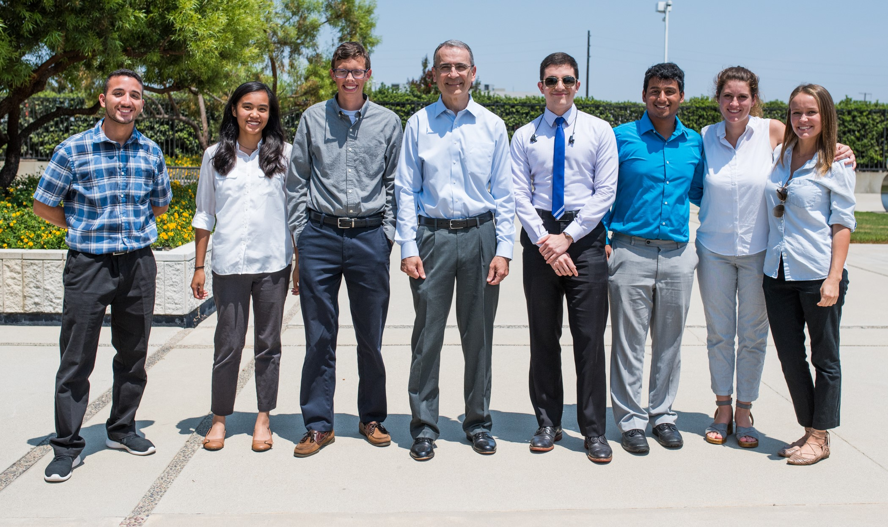

The Aerospace Corporation
Computer Aided Engineering Intern | May 2018 - August 2018
I was an intern for The Aerospace Corporation for the Computer Aided Engineering group under the Engineering Applications Department. I modeled 3D printed parts for prototyping and research applications in SolidWorks, designed model rockets for STEM outreach demonstrations, and developed tools in Python for fluid mechanics applications.
Skills used: SolidWorks, 3D Printing, Python (Jupyter, pandas, numpy, matplotlib, tkinter), Linux
|  |
CFD Lab
Undergraduate Researcher | August 2017 - Present
I am an undergraduate researcher at the Computational Fluid Dynamics Laboratory. I am currently working on a convolutional neural network that predicts force coefficients on 2D airfoils. I have also ran CFD simulations on vertical axis wind turbines on OpenFoam.
Skills used: OpenFOAM, Paraview, Linux
ASAE
Mentor, Empennage Lead, Webmaster | Fall 2015 - Fall 2017
The Aerospace Society of Automative Engineers (ASAE) design competition is a college-level engineering competition where students design and build remote control model airplanes to achieve certain tasks. As part of the UC Berkeley team, I participated in the regular class, where we were tasked with making a plane that can carry as much weight as possible while still fly. I am involved with the empennage team, in which I helped design, CAD, perform engineering analyses on, and manufacture the empennage as well as collaborated with other subteams to create the final product. As the organization's internal affairs officer, I also designed and built the team website, handled recruitment, and planned team events such as the beginning-of-the-year mini-competition for new members and bonding activities.
You can learn more about my work on ASAE on the projects page.
Skills used: SolidWorks, ANSYS, lasercutting, woodwork
Microsoft
Explorer Intern | May 2017 - August 2017
I was an Explorer Intern at Microsoft. The internship was a three-month rotation program, in which I spent four weeks as a program manager intern and eight weeks as a software developer intern. During my time there, I worked with two other interns to write a spec sheet for our intern project and implement virtual machine creation and interaction features for our team's testing infrastructure.
Skills used: C# in Visual Studio
KPF Group
Undergraduate Researcher | February 2017 - May 2017
Through UC Berkeley's Undergraduate Research and Apprenticeship Program (URAP), I was an undergraduate researcher at the Space Sciences Laboratory. I was part of a team designing the Keck Planet Finder (KPF), a high stability and high precision spectrometer to be implemented at the Keck Observatory. I assisted in the mechanical design of KPF parts and assemblies and conducted laboratory testing of optical and mechanical systems.
Skills used: SolidWorks, Microsoft Excel and Powerpoint
DNF Lab
Undergraduate Researcher | February 2016 - December 2016
I was an undergraduate researcher in Dr. Hayden Taylor's Design for Nanomanufacturing Lab at UC Berkeley, where I collected data for the lab's Nanocalipers project. The project aims to build a system that determines the mechanical properties of thin films with high resolution. As one of the undergraduate researchers in the lab, I was trained on the optical system and am tasked with operating lab equipment including a spin coater and a UV aligner to prepare samples and collect video data.
Skills used: Matlab, video data collection with Thorlabs, chemical lab techniques
Wind Tunnel Lab
Lab Assistant | Summer 2016
I was part of a team of undergraduate students in Dr. John Larue's Wind Tunnel Lab at UC Irvine, where I calibrated and operated a wind tunnel to collect experiment data and helped manufacture hot and cold wire anemometers. In addition, I worked with Matlab and Labview code for an implementation of Wyngaard's power spectrum correction function.
Skills used: Matlab, LabView, chemical lab techniques